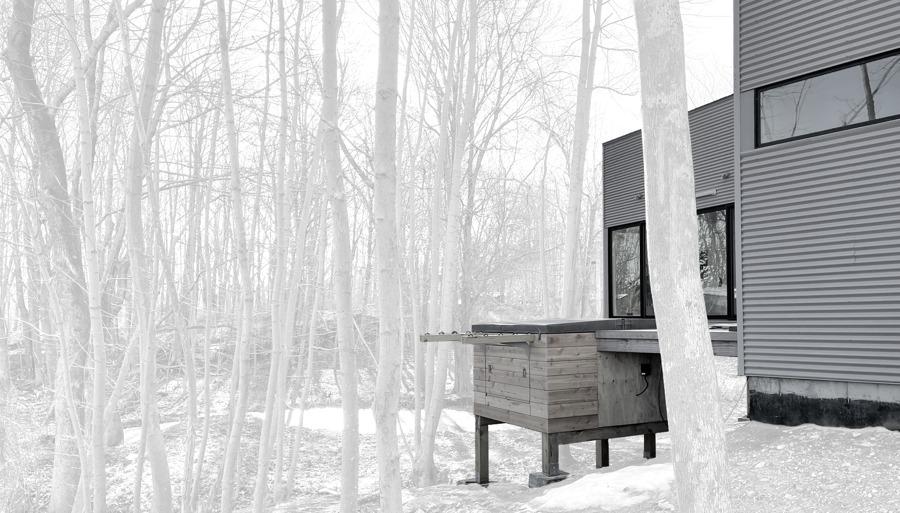
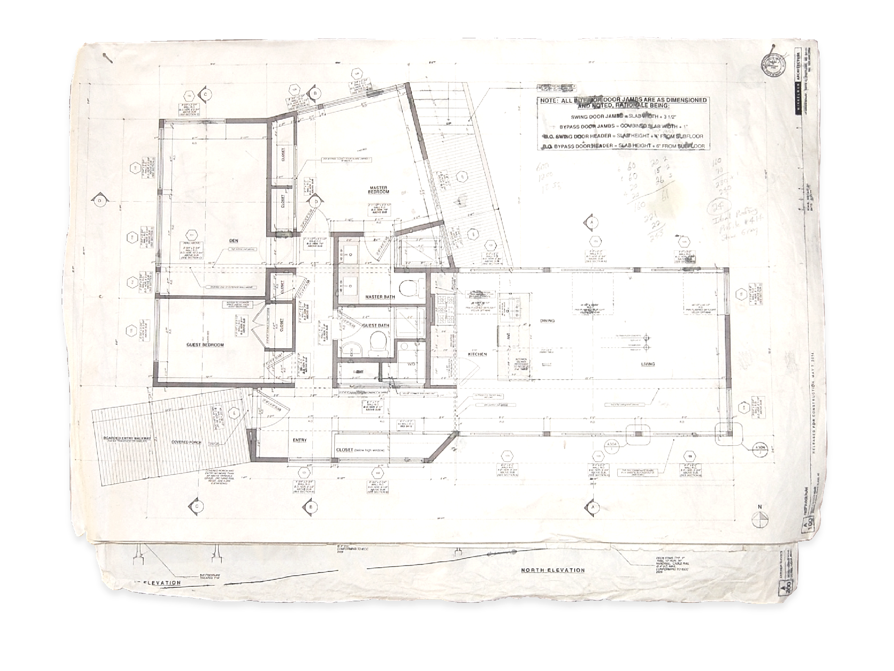

<!DOCTYPE html>
<title>Harsh Barge - Todd Heasley</title>
<meta name="viewport" content="initial-scale=1.0">
<meta name="og:image" content="https://toddheasley.github.io/harsh-barge.png">
<meta name="og:title" content="Harsh Barge - Todd Heasley">
<link rel="stylesheet" href="default.css">
<header>
    <h1><a href="index.html">Todd&nbsp;Heasley</a></h1>
</header>
<main>
    <h1>Harsh Barge</h1>
    <h2><time>2013-2015</time></h2>
    <figure><a href="harsh-barge.png"></a></figure>
    <p>Home and studio on Peaks Island, designed for me and <a href="https://github.com/brennaheaps">Brenna Heaps</a> by <a href="http://winkarch.com">Winkelman Architecture</a></p>
    <figure><a href="harsh-barge.jpg"></a></figure>
    <figure><a href="harsh-barge-plan.png"></a> <figcaption>Build info and pics on the dedicated <a href="https://toddheasley.github.io/harsh-barge">project&nbsp;page</a></figcaption></figure>
</main>
<footer>
    <p><a href="https://github.com/toddheasley">@toddheasley</a></p>
</footer>